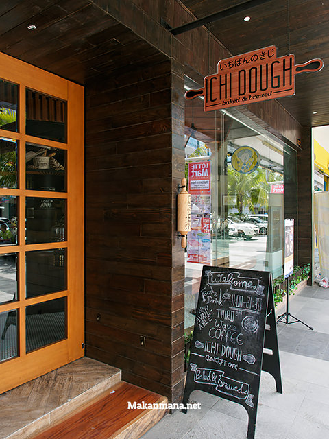
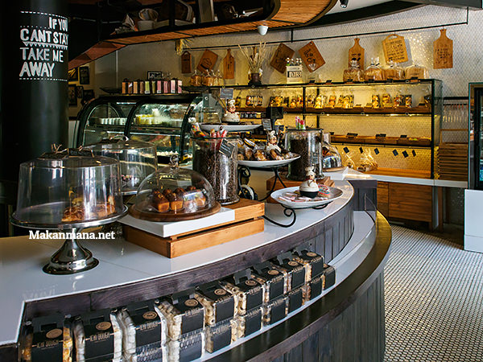
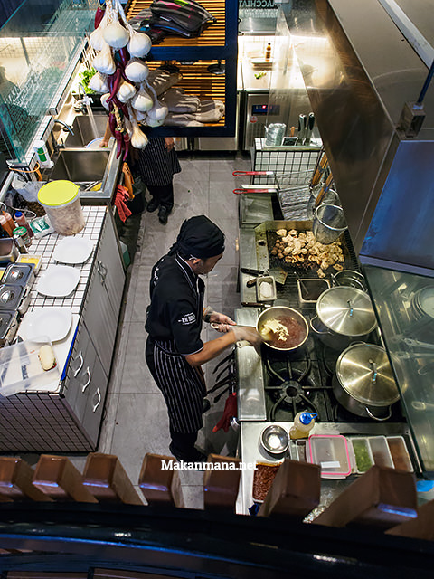
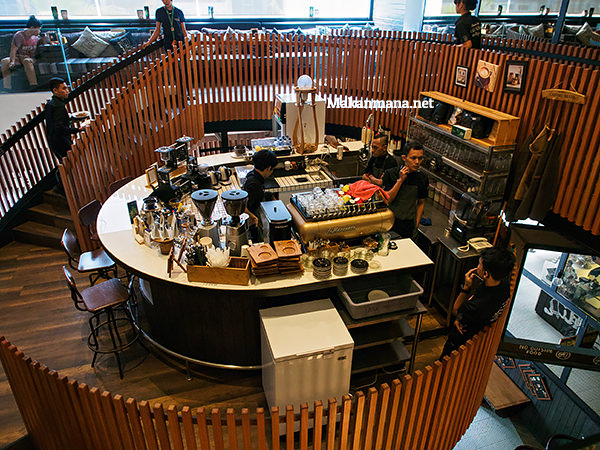
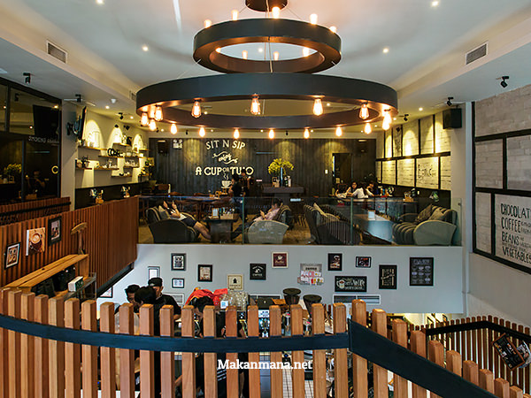
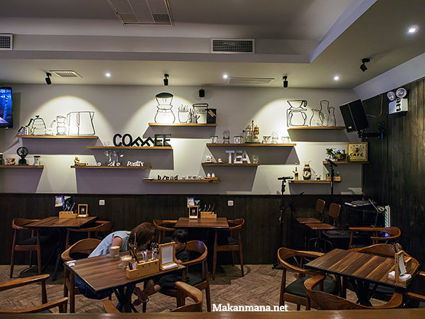
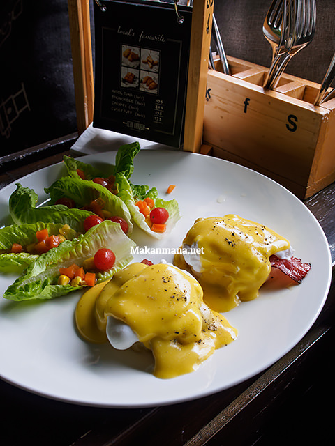
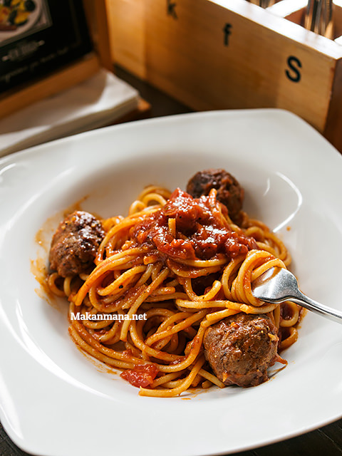
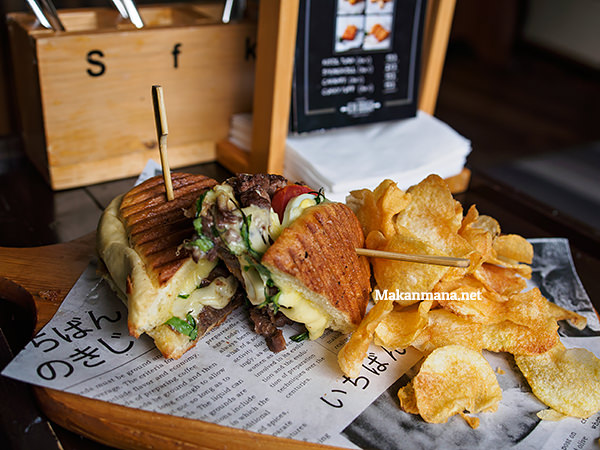
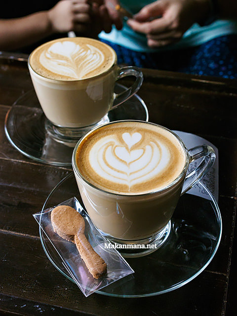

Lokasinya berada di sebuah ruko bagian depan mal, tetanggaan ama Aniu dessert house, dan terletak di seberang Samwon Express. Ichi dough, kombinasi 2 kata dari bahasa Jepang (ichi = satu) dan dough yang berarti adonan ini mengambil tagline baked & brewed.

Dengan konsep baked & brewed, lantai 1 menampilkan display bakery, pastry, dan aneka jenis kue. Sedangkan di bagian belakang, terdapat beberapa dining table, serta open kitchen yang dapat disaksikan apabila kita menuju ke lantai 2.


Belum saja menapakkan kaki di lantai 2, sebuah area circular yang dipagar dengan jejeran kayu menjadi tempat pemberhentian sejenak. Disinilah konsep brewed melengkapi tagline usaha ini. Sebuah mesin kopi, beberapa grinder, aroma kopi, dan beberapa kursi bar melengkapi area bar ini.

Beberapa langkah kemudian, sampailah di lantai 2. Sebuah sofa panjang dengan bantal yang berjejeran menjadi daya tarik apabila anda ingin duduk dan ngopi cantik disirami cahaya dari luar yang menembus kaca.

Tapi buat kami yang ingin brunch minggu itu, harus melewati sebuah ‘jembatan’ kecil dan akhirnya duduk di bagian belakang dengan penerangan lampu LED yang lebih warm. Disini tersedia juga beberapa sofa dan meja makan sambil dimanjakan beberapa hiasan di dinding.

Menu yang dihadirkan kebanyakan merupakan light bites, menu breakfast, pasta, toasties, dan sliders. Dari sekian, berikut yang kami coba.

Classic egg benedict (42.5)
Egg benedictnya memakai english muffin. You can expect the softness of the muffin, dan saos hollandaise melumuri poached egg yang sedikit asam hasil boiling dengan vinegar, and paired with fresh lettuce.

Spaghetti meatballs (49.5)
Spaghetti bolognese dengan 3 buah meatballs sapi. Racikan in house meatball melengkapi hidangan pasta berbasis bolognese ini.

Roast Beef Panini (48.5)
Panini bread dilapis dengan sliced roast beef, rockets, tomat, telur dan dipanggang hingga cheddar yang berada didalam pun melumer. Permukaannya crunchy namun isi roti tetap lembut, dan thin sliced potato menjadi sidedishnya—Recommended.

Latte (23.5) – one of the cheapest you can get in town. Selain minuman yang fancy, sepertinya pengelola Ichi Dough lebih fokus di segmen kopi, terutama third wave coffee.
Dari kesemuanya, interior dari Ichi Dough merupakan salah satu faktor paling esensial, terlepas dari konsep bakery dan cafe yang berada di bangunan yang sama.
Investasi yang tidak murah, mulai dari design, material bangunan, mesin kopi, grinder hingga coffee equipment untuk manual brewing yang sudah pasti mencapai angka ratusan juta, tampaknya Ichi Dough tidak main-main dalam berbisnis.
Ichi Dough – Baked & Brewed
Ruko Centre Point Blok M 21-22
Telepon: 061 80510873